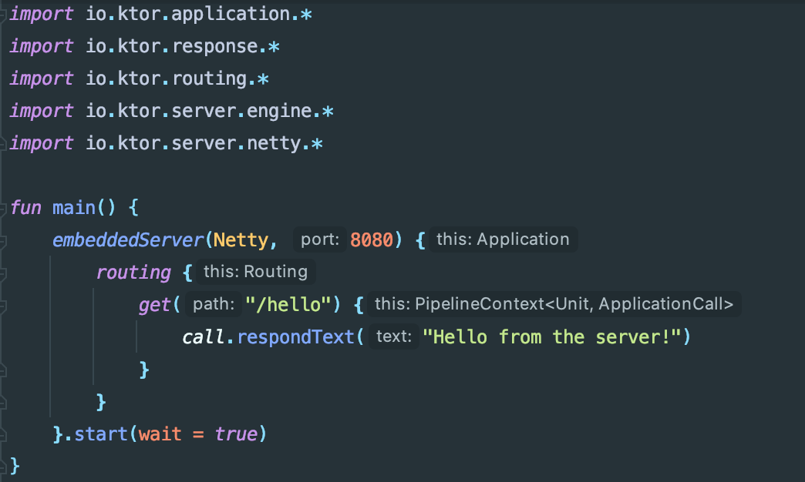
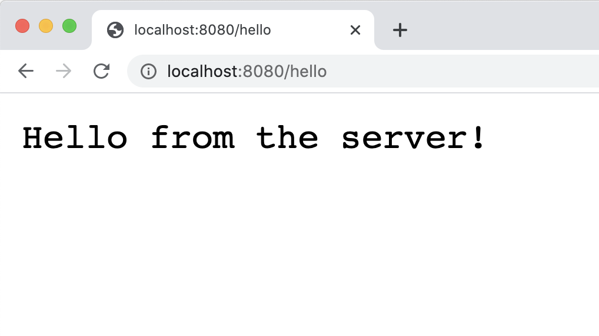
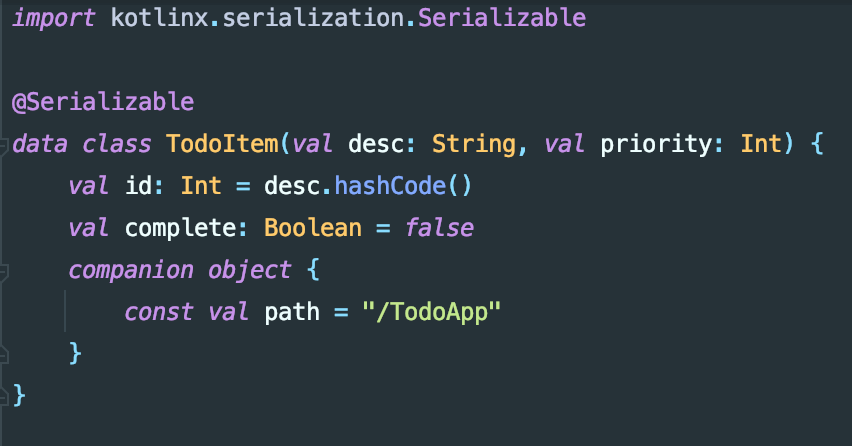
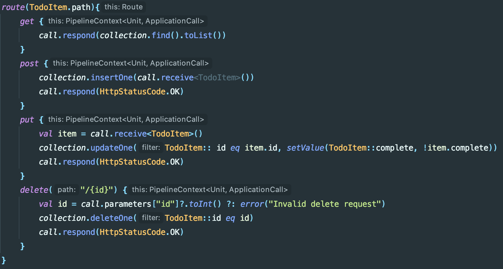
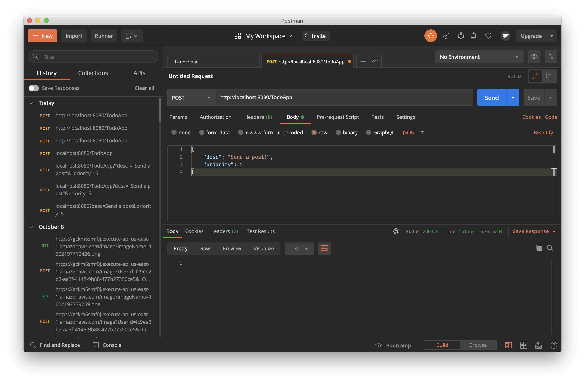
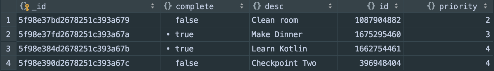

Checkpoint Two
Current Progress
For this checkpoint, I build a really awesome Kotlin multiplatform project. This project was inspired by a hands on lab that can be found on the Kotlin website. Although this was my inspiration, my application extends the material that was covered in the lab and adds entirely new functionality.
Support for multiplatform programming is a huge benefit of Kotlin. When you use Kotlin's multiplatform libraries, you can write and reuse common code structures between different platforms. To understand this better, I decided to build a full-stack Todo List application, that used Kotlin for both the client and the server. On the frontend, I used Kotlin/JS with React. To build my backend, I used Kotlin/JVM to build a server. On this server, I used the Ktor framework to build an asynchronous REST API. Finally, I used several of Kotlin's multiplatform libraries including kotlinx.serialization and kotlinx.coroutines. This enabled me to write type-safe code, even when communicating over a network. Additionally, this lets me reuse constructs that were shared between the client and the server. In my application, I used this functionality to create a type-safe definition of the todo list item. After building a functioning application, I used the KMongo framework to map my serialized todo items into a local MongoDB database. This way, my data persists even after I terminate the server.
To begin, I created a basic Ktor API. This API uses the Netty development engine, and serves locally on port 8080. When I accessed the path "/hello", I was greeted by a "Hello world" message. Although this may seem similar to my initial checkpoint, this message is being propagated from the backend, whereas my initial exploration was entirely in Kotlin/JS.

After getting this working, I created a Serializable data class to represent each todo item. Since this construct belongs to the commonMain directory, both the client and the server can use this definition. From here, the kotlinx.serialization package will serialize and deserialize this class for us without us ever having to think about it. This is super powerful!
Next, I created a mutableList to act as my temporary data store, as well as some basic routes for my API.
To test the GET method, I simply accessed the link from my browser. This returned my temporary list of todo items.
To test the POST, PUT, and DELETE methods, I used a tool called postman. Below you can see a sample POST request, as well as the appropriate response from the server. Here, I am making a POST request to add a new item. similarly, I make a PUT request to update the status of an item. Finally, I make a DELETE request to remove an item completely.
After my backend was fully functional, I used my experience from checkpoint one to create a front-end application using Kotlin/JS. Here, I built an API client to interface with the ktor-clients library. This allowed me to connect my frontend to my backend in a really clean way. After building an input component, and connecting my frontend to the proper API calls, I had a functional todo list application.
After that, I dug into the KMongo framework. This is a great community-driven Kotlin framework and it makes it a breeze to integrate a MongoDB database into your Kotlin/JVM application.
After removing the mutable list, and replacing this logic with the appropriate calls to KMongo, I now have a permanent data store. Here is a snippet that shows what the data actually looks like within MongoDB.
Below is a video demonstration of the complete application!
Next Steps
Next, I will explore Kotlin for mobile and data science.